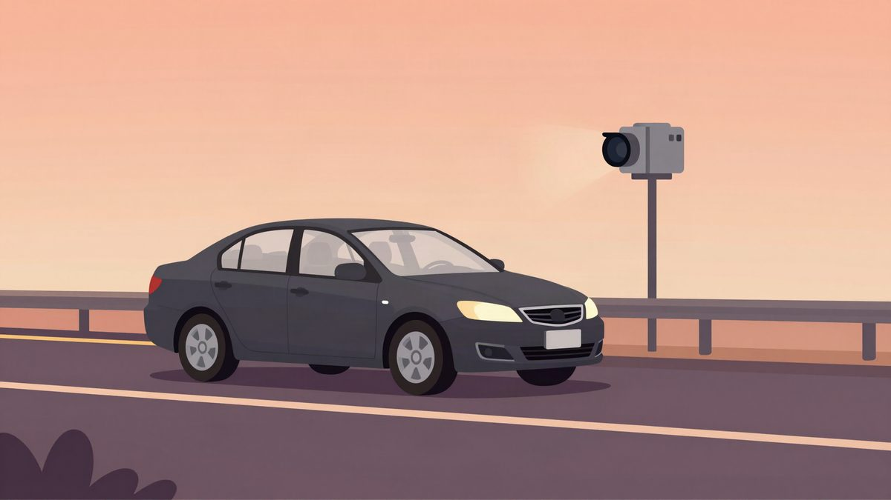

Američki sudovi sve češće presuđuju: Flock kamere za čitanje tablica traže nalog

Savezni sud u Oklahomi presudio je da korištenje čitača registarskih tablica bez sudskog naloga krši Četvrti amandman, što je prema izvoru prva takva presuda saveznog suda. Kamere Flocka i drugih pružatelja zabilježile su vozilo više od 50 puta u 30 dana. Slično je 2024. zaključio i žalbeni sud Virginije, a više od 80 gradova otkazalo je ili nije obnovilo ugovore za takve sustave.
Savezni sud u Sjevernom okrugu Oklahome je 1. listopada presudio da korištenje sustava za automatsko čitanje registarskih tablica (ALPR) bez sudskog naloga krši Četvrti amandman Ustava SAD-a. Prema izvoru, to je prva takva presuda saveznog suda. Donijela ju je sutkinja Sara Hill u slučaju United States v. Kyle.
Zamjenik šerifa iz Tulse provjerio je u ALPR sustavu kalifornijsku registarsku oznaku jednog SUV-a. Sustav je pokazao da se vozilo u prethodnih 30 dana kretalo kroz nekoliko saveznih država, a kamere Flocka i drugih pružatelja zabilježile su ga više od 50 puta. Sud je zaključio da takav nadzor stvara "detaljan zapisnik svakog mjesta na kojem je vozilo bilo, s fotografskim dokazima".
Sutkinja je upozorila i na razvoj sustava. Napisala je da "nije teško zamisliti što slijedi: više kamera na više prometnih znakova i zgrada te možda na više policijskih automobila", a moguće i kamere na dronovima. Prema sudu, ALPR bi mogao pratiti i posjete klinici za plodnost, liječniku, odvjetniku, trgovini alkoholom ili kasinu. Za nadzor takvog opsega, zaključio je sud, potreban je nalog.
Prethodni slučaj iz Virginije
Oklahoma nije prvi takav slučaj. Žalbeni sud Virginije je 2024. u slučaju Commonwealth v. Bell presudio da je Flock sustav u Norfolku kršio Četvrti amandman. Policija u Norfolku postavila je 172 Flock kamere po gradu. Sud je takav sustav usporedio s uređajem za praćenje koji slijedi automobil kamo god ode, a spomenuo je i opasnost od zlouporabe i hakiranja kamera.
Do tada su sudovi uglavnom odbacivali takve tužbe. Vrhovni sud Massachusettsa je 2020. u slučaju Commonwealth v. McCarthy presudio da sustav s nekoliko kamera na glavnim cestama nije problematičan jer ne otkriva privatne detalje života. Slično su zaključili i neki savezni sudovi.
Utjecaj presude Chatrie
Autor izvornog teksta smatra da je na smjer presuda utjecala nedavna odluka Vrhovnog suda SAD-a u slučaju Chatrie v. United States. Vrhovni sud je u njoj odlučio da je nalog potreban za dohvat podataka o lokaciji od tvrtki poput Googlea. Time je znatno ograničena takozvana doktrina trećih strana, prema kojoj podaci dani pružatelju usluge gube zaštitu.
Autor procjenjuje da će se ALPR sustav vjerojatno smatrati pretragom ako može otkriti osobne detalje i omogućuje opsežan nadzor, a vozači svoje podatke nisu dobrovoljno otkrili. Vožnja javnim cestama, ističe, nije dobrovoljno otkrivanje kretanja. Presudno je otkriva li sustav privatni život, a to ovisi o broju kamera. Nekoliko kamera u gradu vjerojatno neće biti problem, dok sustavi sa stotinama ili tisućama kamera možda hoće.
Status ALPR sustava i dalje nije posve jasan. Autor ističe da ni opsežni sustavi ne prate ljude tako sveobuhvatno kao praćenje mobitela i da ishod ovisi o pojedinom sustavu. Ipak smatra da će sudovi vjerojatno tražiti nalog.
Kontroverze oko Flocka
Flock kamere izazivaju političke sporove u SAD-u. Prema izvoru, više od 80 gradova otkazalo je ili nije obnovilo ugovore za ALPR sustave. Zabilježeni su brojni slučajevi u kojima su policajci koristili ALPR sustave za uhođenje žena. Zagovornici ALPR-a pozivaju se na studije prema kojima smanjuje krađe automobila, no dokazi su sporni. Je li Flock dostupan u Europi i po kojoj cijeni, nije rečeno.
Izvor: Reddit r/privacy